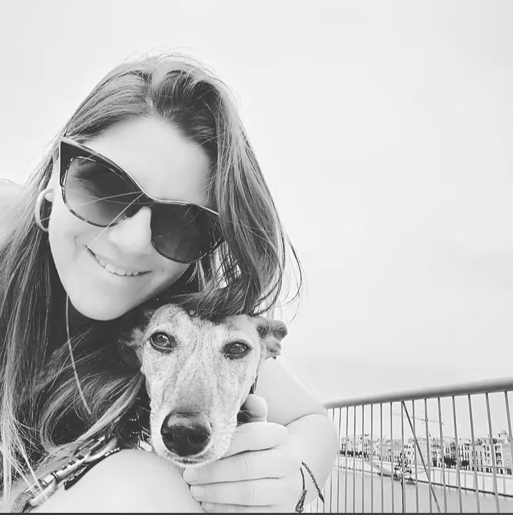

Más de 15 años cuidando las mascotas de La Rinconada con profesionalidad, cercanÃa y los mejores medios técnicos.

No somos una clÃnica más. Somos el sitio al que llevan a sus mascotas las familias que valoran un trato cercano, honesto y profesional. La Dra. Paula Canalias, nuestra directora y especialista en pequeños animales con más de 18 años de experiencia, lidera un equipo con una obsesión: que tu mascota reciba exactamente lo que necesita, ni más ni menos.
Instalaciones modernas, equipamiento de última generación y un equipo humano que se preocupa de verdad. Eso es lo que nos diferencia.
Tratamos a tu mascota como si fuera nuestra. Escuchamos, explicamos y acompañamos en cada paso.
Formación continua, tecnologÃa puntera y protocolos actualizados. La excelencia es nuestro estándar.
Sin tratamientos innecesarios. Te recomendamos siempre lo mejor para tu mascota, nunca lo más caro.